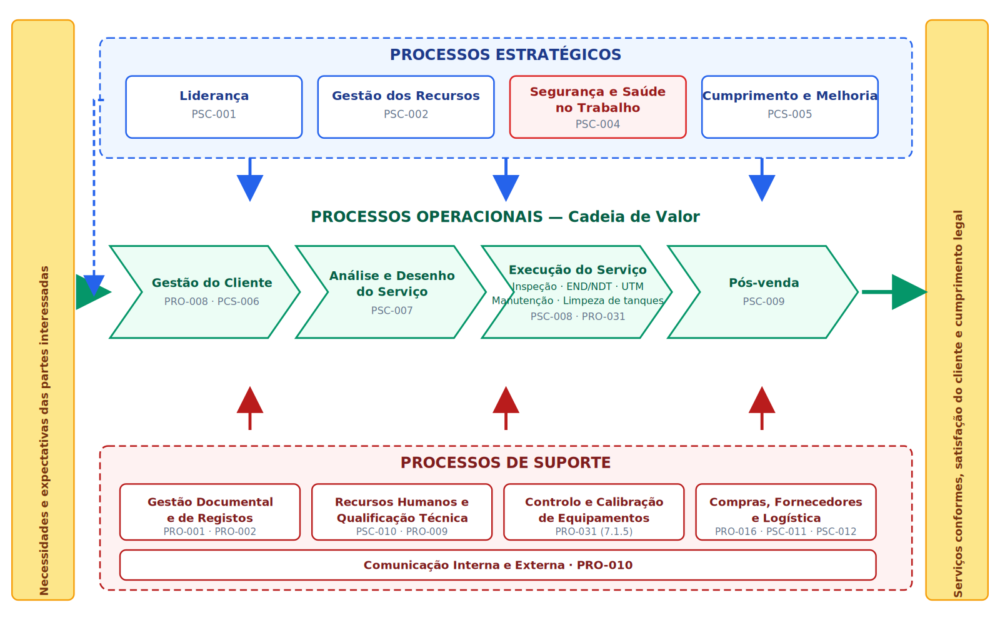

Introdução
O presente Mapa de Processos representa graficamente a estrutura, as inter-relações e a sequência dos processos que conformam o Sistema de Gestão Integrado (SGI) da organização. Este mapa permite visualizar de forma clara e concisa como os processos estratégicos, operacionais e de suporte interagem para cumprir os requisitos das normas ISO 9001:2015 e ISO 45001:2018, bem como para satisfazer as necessidades e expectativas das partes interessadas.
Mapa de Processos do Sistema de Gestão Integrado

Figura 1: Mapa de Processos do Sistema de Gestão Integrado da FACASI. Clique na imagem para a ver em ecrã completo.
O mapa ilustra a interconexão entre os processos estratégicos, operacionais e de suporte, mostrando como cada um contribui para a consecução dos objetivos do SGI e para a satisfação dos requisitos das partes interessadas.
Legenda e Tipos de processos
processos Estratégicos: Orientan e dirigen a organização
processos Operativos: Generan valor para o cliente
Processos de Suporte: Apoyan a operação de outros processos
Descrição dos Processos
PROCESSOS ESTRATÉGICOS
- Liderança (PSC-001)
- Gestão dos Recursos (PSC-002)
- Segurança e Saúde no Trabalho (PSC-004)
- Cumprimento e Melhoria (PCS-005)
Estes processos definem a direção estratégica da organização e asseguram o alinhamento com os objetivos do SGI.
PROCESSOS OPERACIONAIS (Cadeia de Valor)
- Análise e Desenho do Serviço (PSC-007)
- Execução do Serviço — inspeção, END/NDT, UTM, manutenção (PSC-008)
- Gestão do Cliente (PCS-006)
- Pós-venta e Acompanhamento (PSC-009)
- Gestão de Fornecedores e Subcontratados (PSC-011)
- Logística e Apoio a Operações (PSC-012)
Processos que executam os serviços prestados aos clientes e geram o valor da organização, desde a análise do pedido até à entrega do relatório de inspeção.
PROCESSOS DE SUPORTE
- Gestão Documental e de Registos (PRO-001, PRO-002)
- Recursos Humanos, Formação e Qualificação Técnica (PSC-010, PRO-009)
- Controlo e Calibração de Equipamentos de Medição
- Administração e Compras (PRO-016)
- Comunicação Interna e Externa (PRO-010)
Processos que disponibilizam os recursos e as condições necessárias ao funcionamento eficaz dos processos estratégicos e operacionais.
Necessidades das Partes Interessadas
O Sistema de Gestão Integrado considera as necessidades e expectativas das seguintes partes interessadas (ver DOC-003):
- Clientes — fiabilidade técnica dos relatórios, prazos e cumprimento dos requisitos de SST
- Trabalhadores — segurança, saúde e manutenção das qualificações técnicas
- Fornecedores e subcontratados — condições contratuais claras e critérios de avaliação conhecidos
- Autoridades e organismos reguladores — cumprimento legal
- Organismo certificador — evidência objetiva de implementação do SGI
- Comunidade local — operação responsável e criação de competências técnicas locais
- Sócios e Alta Direção — sustentabilidade da organização e prevenção de riscos operacionais e legais
Interrelação entre Processos
Os processos do SGI estão interligados da seguinte forma:
- Os processos estratégicos definem a direção e os objetivos para os processos operacionais.
- Os processos operacionais geram informação — resultados de inspeção, não conformidades, incidentes — que alimenta a melhoria contínua.
- Os processos de suporte garantem as condições sem as quais o serviço não pode ser prestado: pessoal qualificado e equipamentos calibrados.
- A saída de um processo é frequentemente a entrada de outro, criando um sistema integrado.
- O feedback das partes interessadas, incluindo a consulta aos trabalhadores em matéria de SST, influencia a melhoria de todos os processos.
Histórico de Versões
| Versão | Data | Descrição | Aprova |
|---|---|---|---|
| 000 | Pendente de validação | Original | CEO |